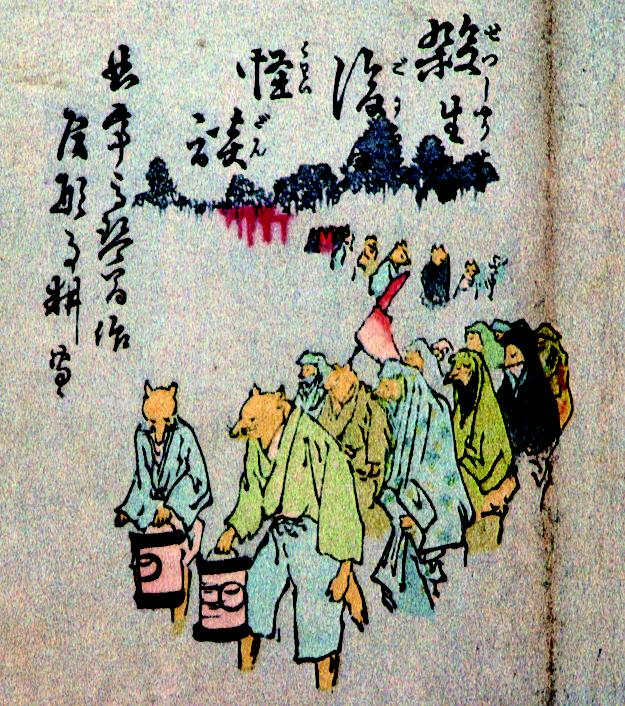

狐の行列。衣服を身につけ、先頭の狐は提灯をもっている。森の中の稲荷社から出てきているようである。
著作者：尾形月耕／出典：親書誌：A5_pushkin_0001：殺生後怪談；セッショウゴニカイダン／日付：2011／資源識別子：A5_pushkin_0001_0001_0000
Copyright (c)2010- International Research Center for Japanese Studies, Kyoto, Japan. All rights reserved.